画面を実際に触って覚える！「模擬体験ツアー」
セルのタップや絞り込み、メニューの開き方を実際に操作しながら1分で体験できます。
ポータルでできること
龍翔会ポータルは、大会への参加申し込みと参加費の集金状況を、みんなで共有しながら管理するWebサイトです。変更内容はリアルタイムでクラウドに同期されます。
- 大会参加申し込み表（出欠・参加費の支払い状況の入力と確認）
- 参加者一覧（誰がどの大会に出るかの確認）
- 支部内掲示板／お手伝い募集／アンケート
- A4印刷・PDF保存・CSV出力・バックアップ（申し込み表のみ）
- データは基本すべてクラウドに安全保存
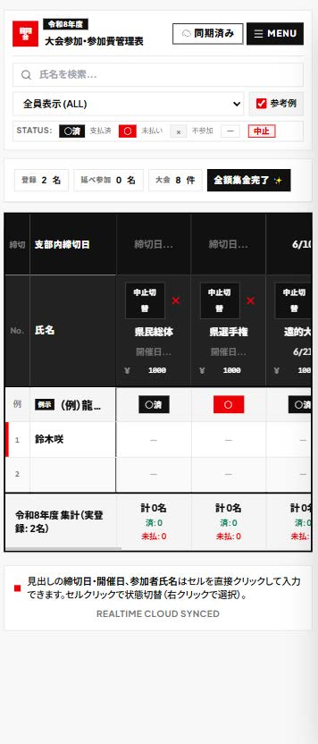
大会参加申し込み表（トップ画面）
スマホにアプリとして入れる（おすすめ）
メニューの「通知」をオンにすると、投稿された内容など、ポータルの新しいお知らせがお使いのスマホに届きます。この通知は、アプリとしてホーム画面に入れた場合だけ使えます。
下の簡単な手順で、ホーム画面にポータルのアイコンを作れます（作業は約1分）。次回からはそのアイコンを押すだけで開けます。
iPhone（アイフォン）の場合
※ ブラウザ「Safari」で行います
-
1
青いコンパスのアイコンの「Safari」を開き、ポータルのアドレスを開く
https://ryusyokai.vercel.app/ - 2 画面の下にある「共有」ボタン（四角から上向き矢印 ）を押す
- 3 出てきたメニューを上へ動かし、「ホーム画面に追加」を押す
- 4 画面の右上の「追加」を押す
- 5 ホーム画面にアイコンができます。次回からは、このアイコンから開いてください
- 6 アイコンから開き、「MENU」を押して、「通知」をオンにする。確認が出たら「許可」を押す
Android（アンドロイド）の場合
※ ブラウザ「Chrome」で行います
-
1
赤・黄・緑・青の丸いアイコンの「Chrome」を開き、ポータルのアドレスを開く
https://ryusyokai.vercel.app/ - 2 画面の右上にある点が縦に3つ並んだマーク（︙）を押す
- 3 「アプリをインストール」または「ホーム画面に追加」を押す（機種により表示が異なります）
- 4 確認の画面が出たら、「インストール」または「追加」を押す
- 5 ホーム画面にアイコンができます。次回からは、このアイコンから開いてください
- 6 アイコンから開き、「MENU」を押して、「通知」をオンにする。確認が出たら「許可」を押す
スマホの「設定」アプリで、このアプリ（ポータルアイコン）の通知が許可されているか確認してください。
アカウント登録とログイン
はじめて利用する場合は、ログイン画面下部の「はじめての方は新規登録」から登録します。
新規登録の手順
- メールアドレスを入力
- パスワードを入力（6文字以上）
- パスワード（確認）に同じものをもう一度入力
- 「登録する」を押して完了
ログイン方法
- 登録済みのメールアドレスとパスワードを入力してログイン
- 「Googleでログイン」からGoogleアカウントでも簡単にログインできます
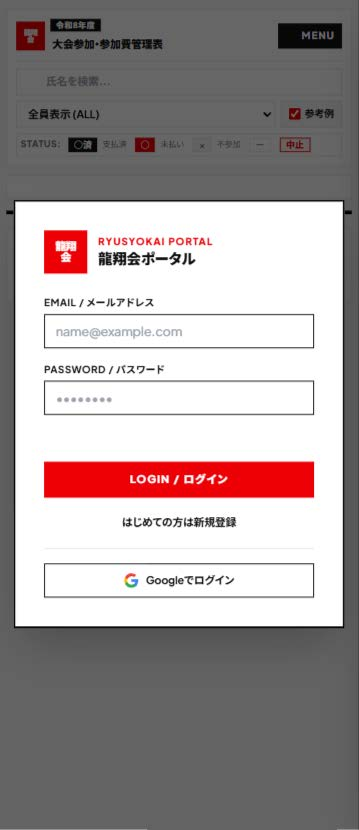
ログイン画面
名前の登録（初回のみ）
初回ログイン後に「あなたの名前を入力してください」という画面が出ます。
ここで登録した名前は、参加表の氏名・掲示板の投稿者名・お手伝い募集・支部内締切日の設定者として全ページ共通で使われます。
- 名簿にすでに自分の名前がある場合は、候補から選べます
- 「参加表（名簿）にも自分を追加する」にチェックを入れると、参加申し込み表にあなたの行が自動追加されます
- 入力後、「登録する」ボタンを押します
- あとから変更する場合は、画面上部の「名前を登録」またはメニュー内の「変更」からいつでも行えます
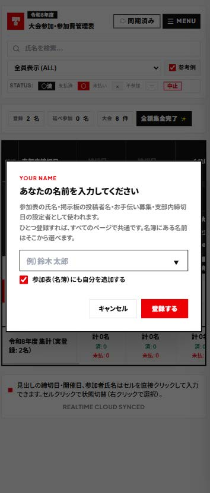
名前の登録画面
参加申し込み表の見方と入力
記号の意味（ステータス）
入力のしかた
- ● 自分の行・参加したい大会のセルをクリック（タップ）するとステータスが順に切り替わります
- ● 右クリックすると、ステータス（○済/○/×/ー）をメニューから直接指定できます
- ● 締切日・開催日・参加者氏名のセルも、直接クリックして入力・編集できます
- ● 参加予定の方は「○」を、参加費支払い済みの方は「○済」を入力してください
表示の絞り込み（フィルター）
- • 全員表示（ALL）：登録メンバー全員を表示します
- • 未払い者のみ：参加費の支払いが済んでいない人だけを表示します
- • 参加予定者：いずれかの大会に参加予定の人だけを表示します

申し込み表画面
メニューの使い方
画面右上の黒い「MENU」ボタンを押すと、右側からメニュー設定ドロワーが開きます。
主なメニュー項目
- ① 年度切替・設定： 表示する年度の切り替え、新年度の追加、年度編集
- ② 大会・日程・参加費編集： 大会の追加・日付・参加費の編集
- ③ 参加者一覧／支部内掲示板／お手伝い募集／アンケート： 各管理ページへ直接移動
- ④ 印刷（A4）・CSV出力： 申し込み表を用紙やエクセル用に出力
- ⑤ バックアップ管理： データの全保存と復元
- ⑥ アカウント設定： 表示名の確認・変更、通知のON/OFF、ログアウト、退会
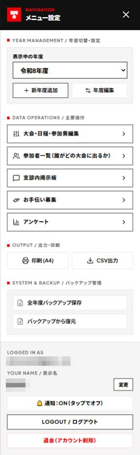
メニュー設定画面
年度・大会の管理（管理操作）
新年度を追加する
- 1 メニュー内の「新年度追加」を押す
- 2 年度名を入力（例：令和9年度）
-
3
引き継ぐデータを選択：
・現在のメンバー名簿（出欠・支払いはクリア）
・現在の大会一覧（大会名・参加費） - 4 「新年度を作成」を押す
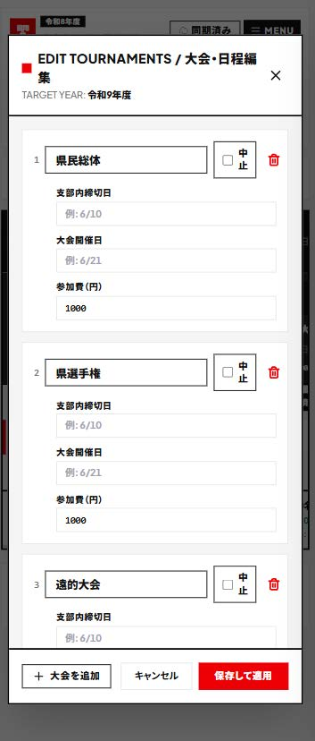
新年度の追加
大会・日程・参加費の編集
メニューの「大会・日程・参加費編集」で大会を追加・編集し、「保存して適用」で反映します。大会の中止フラグや削除も行えます。
年度名の変更・削除
「年度編集」から年度名の変更や、その年度の削除ができます。
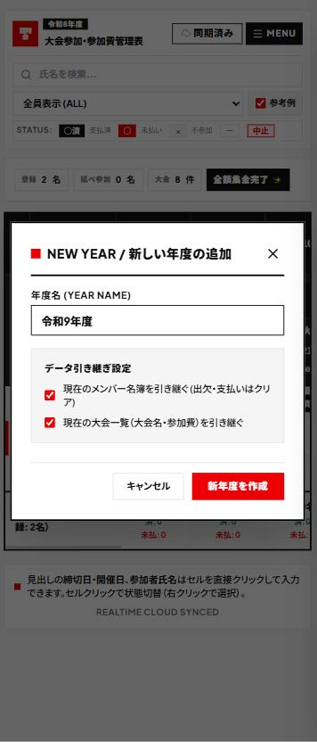
大会・日程・参加費の編集
参加者一覧ページ
「参加者一覧」は、誰がどの大会に出るのかを一覧でスッキリ確認するためのページです。
開き方
- 画面右上の「MENU」を押す
- 「主要操作」の中にある「参加者一覧（誰がどの大会に出るか）」を押す
使い方
- • 大会ごとの参加予定者を確認できます
- • 申し込み状況を変更したいときは、トップ画面の「大会参加申し込み表」で自分のセルを入力します
- • トップ画面へ戻るときは、画面左上の戻るボタンやブラウザの「戻る」をご利用ください
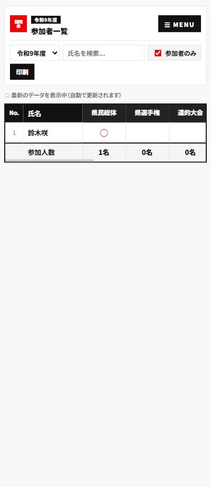
参加者一覧画面
掲示板・お手伝い募集・アンケート
メニューの「支部内掲示板」「お手伝い募集」「アンケート」から掲示板ページを開きます。3つの機能は同じページにタブ形式でまとまっており、投稿者名には登録したあなたの名前が使われます。
支部内掲示板
連絡事項やお知らせを自由に投稿できます。投稿したメッセージはクラウドを通じて全メンバーに共有されます。
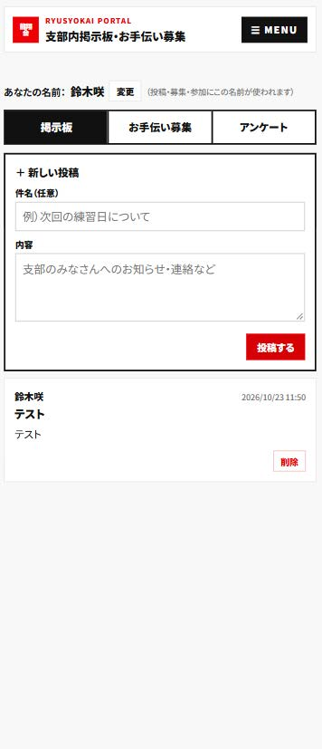
支部内掲示板
お手伝い募集
- • 募集する場合：「募集を作る」ボタンを押して、タイトル・日程・必要人数を入力して作成します
- • 応募する場合：該当の募集にある「手伝える」ボタンを押します
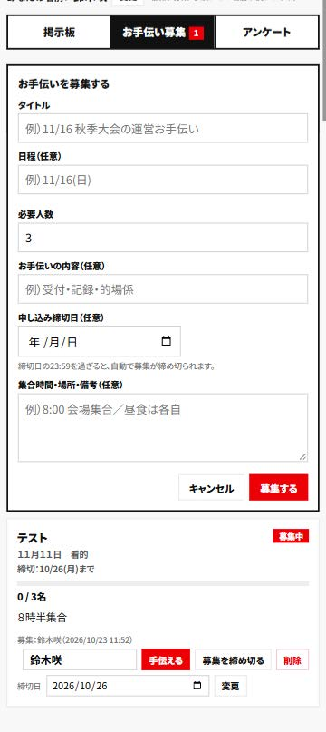
お手伝い募集
アンケートの作り方と答え方
アンケートを作る
- 「アンケート」タブを開き、「アンケートを作る」を押す
- 質問・タイトルを入力（補足は任意）
- 選択肢を入力（1行に1つ、2〜8個）
- 回答締切日を設定（任意）
- 複数選ばせたい場合は「複数選べるようにする」にチェック
- 「作成する」ボタンを押すと公開されます
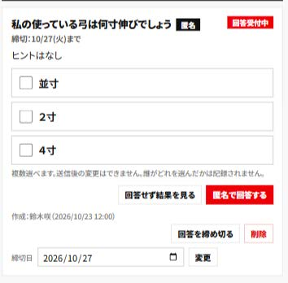
① 作る：アンケート作成フォーム
アンケートに答える
- 回答したい選択肢を選択（複数可の場合は複数選択できます）
- 「匿名で回答する」ボタンを押す
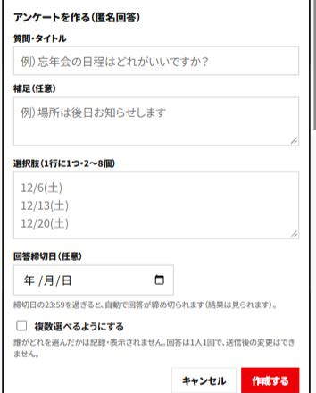
② 答える：選択して「匿名で回答する」を押す
アンケートのポイント
• 回答は完全匿名です： 誰がどれを選んだかは一切記録・表示されません。
• 回答は1人1回： 送信後の変更はできません。「回答せず結果を見る」を押すと結果だけ閲覧可能です。
• 自動締め切り： 締切日の23:59を過ぎると自動で締め切られます（「回答を締め切る」で手動締切も可能）。
データの保存について
このポータルのデータは、基本的にすべてクラウドに保存されます。掲示板・お手伝い募集・アンケートの内容もクラウドに保存されるため、パソコンやスマートフォンを変えても同じ内容を確認できます。 ※ 印刷・PDF保存・CSV出力・バックアップ機能は、大会参加申し込み表のみ対象です。
印刷・PDF保存・CSV出力・バックアップ
これらの機能は、画面右上の「MENU」から行えます（大会参加申し込み表のみ対象です）。
参加申し込み表をA4用紙サイズに合わせて綺麗に印刷します。
「印刷」を押し、印刷画面の送信先（プリンター）で「PDFに保存」を選んで保存してください。
Excel等の表計算ソフトで開けるCSVファイルをダウンロードします。
全年度の申し込み表データをJSONファイルとして手元に保存・復元できます。
もしわからないことや困ったことがあれば、
鈴木までお気軽にお声がけいただけると幸いです。